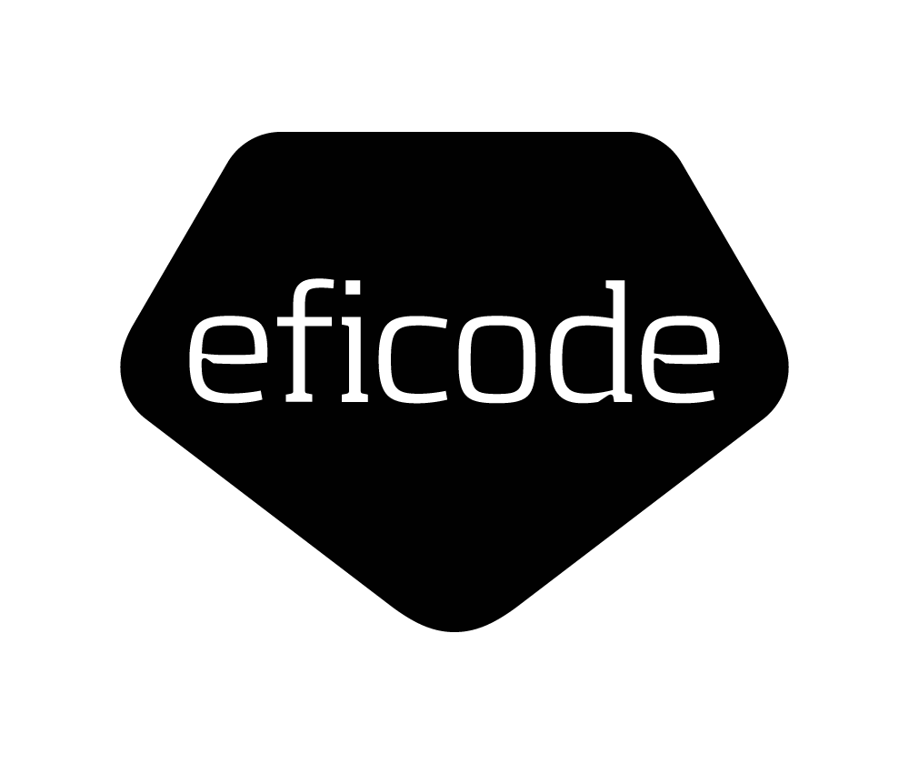

Sandboxing Your AI Agent With Nono
Nono Workshop
github.com/eficode-academy/nono-workshop
Welcome the audience. Today we go from "what is nono?" to running an AI coding agent inside a kernel-enforced sandbox, with credentials it can never see. Format is present → exercise → short break, four times.
Total workshop time: ~90 minutes
~25 min
~20 min
~20 min
~15 min
Q & A / Wrap-up
~5 min
Each block follows the same rhythm: present (~5 min) → hands-on exercise → short break .
Walk through the four exercises. Explain the repeating rhythm: a short presentation, then time to do the exercise hands-on, then a short break before the next topic. Total runtime is 90 minutes, so keep presentations tight and protect exercise time.
A kernel-enforced sandbox for AI coding agents
Press ↓ for details
Once a sandbox is applied, it cannot be widened from the inside —
not even by nono itself.
Introduce nono as an open-source sandboxing runtime for AI agents. It restricts filesystem, network, and credential access using OS-level primitives, enforced by the kernel — not a container or VM.
One Mechanism Per Platform
Platform
Mechanism
Landlock LSM
Seatbelt (sandbox_init)
Landlock LSM, via the WSL2 kernel
Not supported
No native Windows support — Landlock and Seatbelt are Linux/macOS-only primitives, so Windows users run inside WSL2, a real Linux kernel alongside Windows.
What Gets Enforced By Default
Filesystem Sandbox
Landlock / Seatbelt restrict which paths a process can touch
Sensitive Path Blocking
SSH keys, cloud creds, and other secrets denied by default
Dangerous Command Blocking
Known destructive commands refused before they run
Show nono setup --check-only output in the exercise: it reports each of these features and whether they're available on the current machine.
Your First Sandboxed Command
nono run --allow . -- cat allowed.txt
nono run --allow . -- cat ~/.ssh/id_rsa
nono why --path ~/.ssh/id_rsa --op read
This isn't cat politely refusing — the kernel itself refuses to open the file for this process. nono why explains the denial.
Exercise Time
Lab 00 — Installing Nono
Install nono, verify sandbox support, and run your first sandboxed command.
labs/00-installing-nono.md
Point people to labs/00-installing-nono.md. Circulate to help with WSL2 setup and platform-specific install issues.
Short Break
Back in a few minutes — next up: Profiles
Short break before moving to profiles.
Stop retyping flags — bundle them into a reusable profile
Press ↓ for details
A profile is a JSON(C) file bundling filesystem scope,
network rules, credentials, and hooks — passed with --profile.
Motivate profiles: flags are fine for one-off experiments, but profiles are what you check into dotfiles or share with a team so everyone gets the same least-privilege sandbox.
Two Ways to Get a Profile
Pull From the Registry
Fastest path registry.nono.sh.
Author Your Own
Full control extend a registry
profile and override only what differs.
Profiles that extend a base inherit everything from it — list-type fields are additive, single-value fields are overridden by the child profile.
Extending a Base Profile
{
"extends" : "nolabs-ai/claude" ,
"meta" : { "name" : "my-claude" },
"filesystem" : {
"allow" : ["/opt/my-tools" ],
"read" : ["/etc/my-app" ]
}
}
This profile inherits everything from nolabs-ai/claude — network rules, hooks, credentials — and only adds two extra paths. The base profile itself stays untouched.
Validate and Inspect
nono profile validate ~/.config/nono/profiles/my-claude.json
nono profile show my-claude
nono profile diff default my-claude
Because of inheritance, the profile you wrote and the profile nono actually applies can look quite different — always check both before trusting it.
Exercise Time
Lab 01 — Setting Up Your Profile
Pull a registry profile, scaffold your own, and extend a base profile.
labs/01-setting-up-your-profile.md
Point people to labs/01-setting-up-your-profile.md. Help anyone whose agent isn't in the registry yet — they can still scaffold from scratch.
Short Break
Back in a few minutes — next up: Credential Injection
Short break before moving to credential injection.
Give your agent access to secrets it can use but never see
Press ↓ for details
An agent that can read its own environment can read your API keys —
and a prompt-injected or buggy agent can leak them.
Frame the problem: raw secrets in environment variables are readable by the process itself. nono offers two mitigations of different strength.
Two Injection Methods
Method
How it works
Agent sees
--env-credentialLoads secret from keystore, sets env var before sandbox applies
--credential (proxy)Agent talks to a local reverse proxy; real key injected outbound
Use proxy injection for anything that's an HTTP API call — LLM keys, GitHub tokens. Use env injection only for secrets not consumed over HTTP, e.g. a DB password read directly by a library.
How Proxy Injection Works
Agent (sandboxed)
→
Local proxy
→
api.openai.com
The agent only ever holds a phantom token, e.g. OPENAI_API_KEY=nono_sess_a1b2c3... —
the proxy swaps in the real key on the way out.
The agent never has the real key in its environment or memory. Any HTTP client that respects OPENAI_BASE_URL gets redirected through the local proxy automatically.
Wire It Into a Profile
{
"network" : {
"custom_credentials" : {
"openai" : {
"upstream" : "https://api.openai.com/v1" ,
"credential_key" : "openai" ,
"env_var" : "OPENAI_API_KEY" ,
"inject_header" : "Authorization"
}
},
"credentials" : ["openai" ]
}
}
Once wired into a profile, every future run through --profile my-agent-secure gets the credential automatically — no need to remember flags.
Exercise Time
Lab 02 — Credential Injection
Store a secret in your keystore, inject it via env var and via proxy, and verify what's exposed.
labs/02-credential-injection.md
Point people to labs/02-credential-injection.md. Remind WSL2 users that proxy-only network mode needs an explicit opt-in due to a seccomp conflict.
Short Break
Back in a few minutes — next up: Audit & Rollback
Short break before moving to audit and rollback, the final topic.
A tamper-evident record of everything your agent did — and a way to undo it
Press ↓ for details
Every nono run is recorded by a trusted supervisor that stays
outside the sandbox for the whole session.
Sandboxing stops what shouldn't happen; audit and rollback handle the legitimate changes agents make to files they were allowed to touch.
Four Layers, Each Opt-In Beyond the Baseline
Layer
Answers
Enabled by
Session audit
What ran, when, what happened?
Default on
Audit-log integrity
Has the log been modified?
Default on
Filesystem integrity
What state existed before/after?
--audit-integrity
Rollback
Can changes be restored later?
--rollback
Audit is cheap — an event log plus optional hash. Rollback is heavier: full content-addressable snapshots before and after the run, so it's opt-in.
Inspecting the Audit Trail
nono audit list --path ~/nono-workshop-scratch
nono audit show 20260219-092017-8117
nono audit verify 20260219-092017-8117
list groups sessions by project directory; show prints the command, timestamps, exit code, and every event; verify recomputes the hash-chain to detect tampering.
Snapshot and Roll Back
--rollback run
→
rollback show --diff
→
rollback restore
nono rollback verify checks the snapshot store's Merkle tree for missing or corrupted data.
When file changes are detected, nono shows an interactive review right after the session. Restores can be previewed with --dry-run first.
Exercise Time
Lab 03 — Audit & Rollback
Inspect a session's audit trail, then use --rollback to review and restore a file change.
labs/03-audit-and-rollback.md
Point people to labs/03-audit-and-rollback.md. This is the last exercise — ties together sandboxing, credentials, and audit into the full loop.
Q & A
What worked? What surprised you? What would you sandbox next?
Recap the full loop: restrict what an agent can do, hide the secrets it uses, and keep a tamper-evident, reversible record of everything it did. Open the floor.
Thank you
More info? Go visit www.eficode.com
Thank participants for their time and encourage them to keep exploring the roadmap items: tool sandboxing, network policies, and publishing packs.